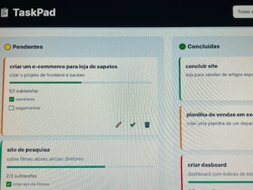
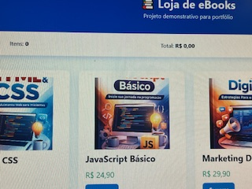
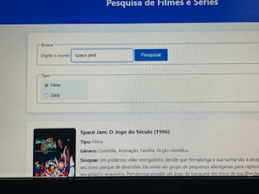
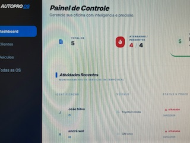

Desenvolvedor Full Stack
Construindo soluções robustas através de projetos práticos. Especialista em arquitetura de APIs e interfaces modernas, unindo lógica de negócio para empresas e performance para projetos independentes.
Sobre
Minha jornada como desenvolvedor é movida pela prática constante. Acredito que a melhor forma de dominar uma tecnologia é resolvendo problemas reais de ponta a ponta.
Desenvolvo ecossistemas completos com foco em Node.js e JavaScript, priorizando sempre o código limpo e a experiência do usuário.
Soluções Estratégicas
Performance & Web
Criação de Landing Pages e interfaces de alta performance, otimizadas para SEO e conversão de usuários.
Sistemas Inteligentes
Desenvolvimento de aplicações sob medida para automação de processos e gestão de dados (ERPs e Dashboards).
Arquitetura Backend
Construção de APIs escaláveis e integração de bancos de dados robustos, garantindo segurança e fluidez.
Projetos em Destaque




Especialidades Técnicas
Interface & UX
- Estruturas Semânticas
- Flexbox & Grid Systems
- JavaScript Moderno (ES6+)
Desenvolvimento Backend
- Node.js & Express
- APIs RESTful
- MySQL & Modelagem
Infra & Deploy
- Git & GitHub
- Vercel / Render
- NPM & Packages